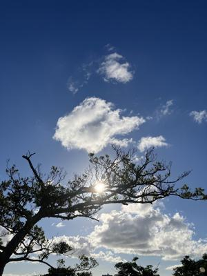
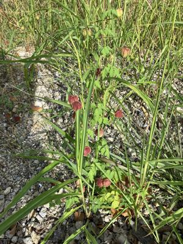

うるがいの話 ある日
最新: コロナで面会なし【うるがいの話 ある日】とは 一日だけのプログです
『うるがいの話』の最新一日だけのプログで、通信料が少なく経済的だ。カニの画像をクリックすると全ての日付が載る『うるがいの話』サイトを表示します
|
|
【うるがいの話】 うるがい(ｳﾙｶﾞｲ urugai)とは、『もずくがに』の名前でとても大きくなります。 |
|---|---|
|
|
【カミマヤーの話】 猫のことを方言でマヤーといいます。カミマヤー（kamimayaa）とは、神の猫のことです。 |
|
【たながぁの音楽】 たながぁ（ﾀﾅｶﾞｰ tanagaa）とは手長えびのことで、何種類かあり大きいのは車 エビぐらいになります。 |

|
【ぶながぁの話】 ぶながぁ(ﾌﾞﾅｶﾞｰ bunagaa)とは、赤い髪の毛、赤い身体、そして身長は１ｍ２０ｃｍ ぐらい、川の蟹を食べているの目撃された。場所は沖縄県国頭郡大宜味村のと ある村僕の隣近所に住んでいる爺さんから、聞いた話です。 |
|
|
【ギーマの話】 ギーマ(giima)とは、山原の里山に咲くスズランに似た、 花を付けます。実は食べられます、 気が付くと口の周りが紫になっています。 |
2024年07月21日 (日）コロナで面会なし
15:47

ヨメがお義母さんの面会するために、施設に連絡をいれると施設内でコロナ
感染が出ました。階が異なるので面会はできますが、と言われたものの面会
は無しにする。
先週泌尿科からの処方薬をもらうために、薬局にいると『母親が、コロナに
感染したので、我々夫婦が感染していないか判定するために、抗原検査キッ
トを二つください』という男性が飛び込んできた。薬剤師が、購入するキッ
トの一つをその場で、キットを開けて使い方を説明していた。使い方を間違
うと意味がないのでと・・・・、ホー確かに、私が去年買った時に説明受け
たかしら？、忘れてしまっている。
７月１日に県立病院でお義母さんの次回の通院日を決める時、医者が今コロ
ナ感染で、・・（患者数を制限？）、月末あたりだと少し収まっている筈な
のでと言っていた。

写真は、フウセンカズラ（風船葛）である。以前見かけたところが、マンシ
ョンが建ったので見る事を諦めていたが、とある場所に沢山あった。取られ
ると困るので場所は内緒である。
１５時３９分 ビットコインの総資産 ￥３０、４３４（↑１２５）